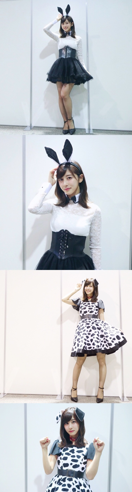
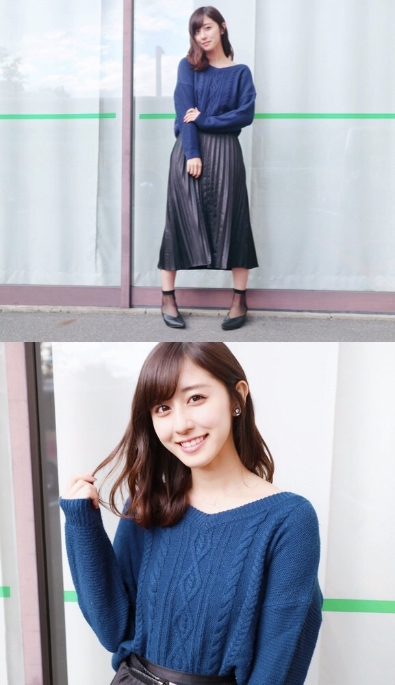
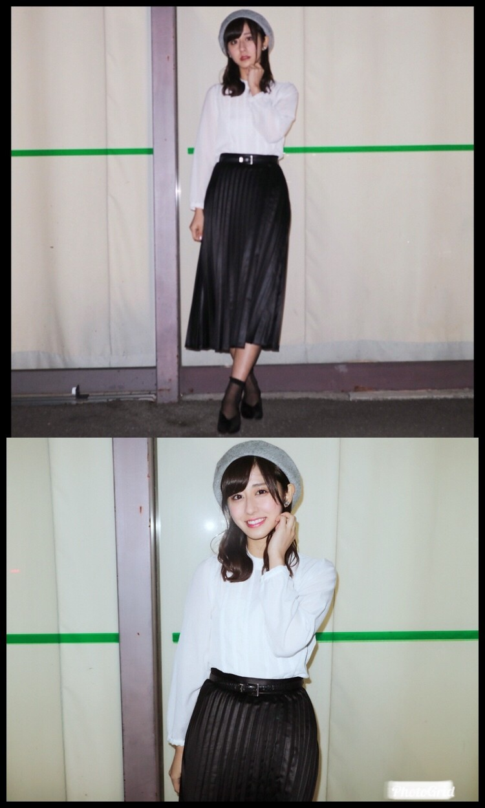
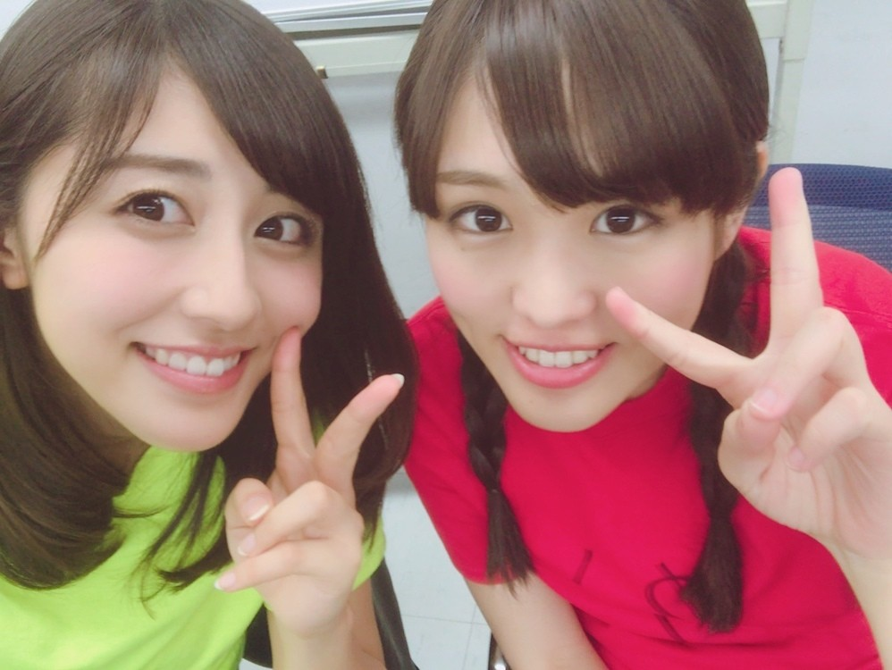
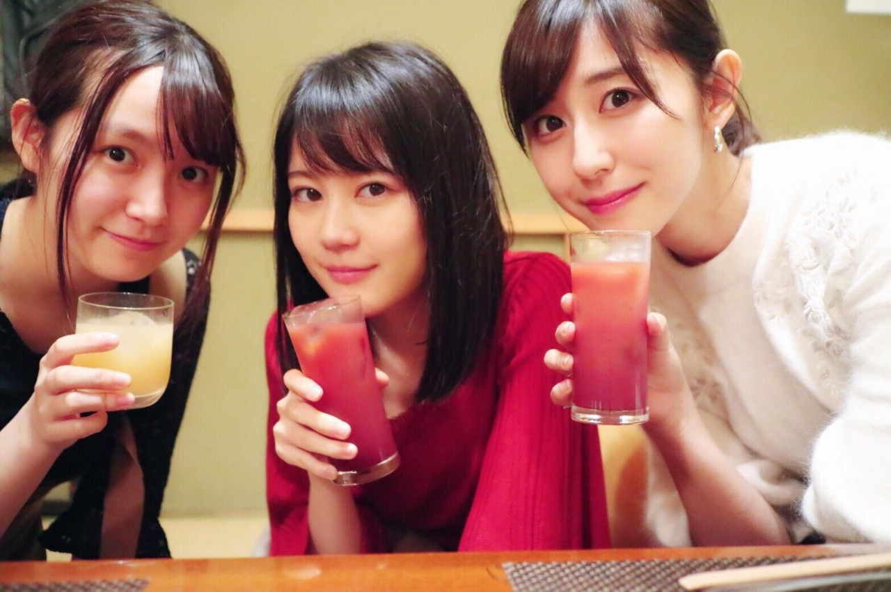

| 2017/11 06 Mon | 斎藤ちはる 東京ドームの前に実現したかったこと |
ちはるーむへようこそ
みなさんお元気ですか〜？
私は九州ツアーから帰って来てからも
風邪を引かず、元気でした！
体は丈夫です！
ここ最近の握手会の時の写真を
載せられていないので、
ザザッと載せていきます
10月28日
この日はハロウィンに直近ということで
ハロウィンコスプレしてみたよ〜

4部はバニーガール風
5部はダルメシアン
バニーは私服に耳や襟やコルセットを
足してみました！
ダルメシアンは3期生がイベントで着たハロウィン衣装を
借りちゃいました！(たまみのでした☺︎)
11月4日
4部

青いニットは暗い服になりがちの冬には
ポイントになる気がする！
冬はニットばっかり着ちゃう！
暖かいからね
5部

4部と同じスカートだけど
白いシャツに、グレーのベレー帽で
少しだけクラシックに！
ベレー帽が人気で嬉しかったです！
またいつか被ろうかな
握手会に来てくださった皆さん、
本当にありがとうございました！！
19thの握手会も、まだまだお待ちしております！
沢山お話ししたいです☺︎
ついに明日は東京ドームライブですが...
その前に絶対に行きたい！と思っていた
かりんのお家に
愛未とまあやと一緒にお邪魔しちゃいました☺︎
約束をやっと果たしました
かりんのディズニーハウスに惚れ惚れ！
マイカメラで沢山写真撮っちゃいました！
撮り甲斐がありました〜
皆さんにもお見せしたい〜！
夜中には愛未とかりんと3人で
「トイストーリー3」をみたのですが
私と愛未は感動して号泣...
私たちを見たかりんに驚かれました笑
最近かりんと物凄く仲良し！
ずっと喋っていられそう☺︎

そしてもう１つ実現したかったことが...
それは中3組でご飯に行くこと！
こちらも実現しました\( ˆ ˆ )/
いくちゃんが和食のお店を見つけて
わざわざ予約までしてくれて
大人！！って2人で感動しました
いくちゃんありがとう♡
中3組もやっと２０歳超えしたので
みんなで少しお酒も飲んだよ！
これも大人！！って3人で感動しました
嬉しかったね♡

沢山お話しして、沢山笑って、
とてもステキな時間になりました！
話が尽きなかったね
また集まろうね！
明日、明後日の東京ドーム公演。
私たちにとって大きな自信となるような
素敵なライブにすることができるよう
精一杯頑張りたいと思います
緊張もするけど...楽しみたいな！
皆さんも楽しみましょう！！
斎藤ちはる